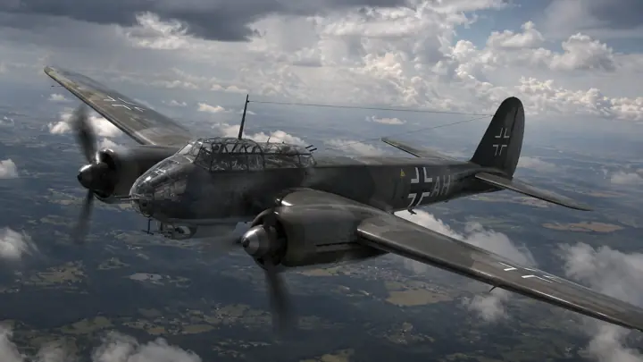

Ju 88 operations · 1939–1945
The Ju 88 did almost every job the Luftwaffe asked of a twin-engine aircraft. It bombed Britain, attacked shipping, served in the Mediterranean and Eastern Front, flew reconnaissance missions and became one of Germany’s most important night fighters. The modelling challenge is choosing a route before buying parts: A-series bomber, D reconnaissance, C heavy fighter, G night fighter, torpedo aircraft or Mediterranean/Eastern Front subject.

Role & strengths
- Luftwaffe multirole bomber, torpedo bomber, reconnaissance and night-fighter platform
- Battle of Britain, Blitz, Mediterranean, Arctic convoys, Eastern Front and Nachtjagd routes
- Greenhouse cockpit, long engine nacelles, dive brakes and heavy underwing options
- RLM 70/71/65 bomber splinter, black undersides, maritime finishes and night-fighter camouflage
- Radar aerials, torpedoes, bombs, cannon noses and specialist variant detail
Key theatres
- Battle of Britain and Blitz bombing
- Mediterranean and North African operations
- Arctic convoy and maritime strike routes
- Nachtjagd night-fighter defence of Germany
Specification Ju 88A-4
Survivors today

Surviving Ju 88s and wreck references are useful for glazing, nacelle shape, undercarriage, bomb racks, dive brakes, radar aerials and the complex cockpit area.
View survivorsTimeline highlights
Build this Ju 88 as…
Pick the role first. A Battle of Britain A-1/A-4, a torpedo Ju 88A-17, a Mediterranean bomber, a C-series heavy fighter and a G-series Nachtjäger all need different parts and finishes.
Aircraft identity
Ju 88A, C, D and G versions differ sharply. Check nose, glazing, radar, guns, racks, tail and engines before choosing decals.
Bombs, torpedoes, radar aerials and cannon noses are not interchangeable. Match the fit to unit, date and role.
Paint scheme cards
Core early-war and bomber route with large splinter surfaces and nacelle exhaust staining.
Night-fighter routes need radar aerials, dark undersides and subtle low-contrast weathering.
Mediterranean aircraft need dust, sun fade, yellow areas and heavy nacelle staining.
Torpedo Ju 88s need external weapons, sea grime and long-distance weathering.
Campaign cards
KG 30, KG 51, KG 54 and other Ju 88A routes with bomber splinter, black undersides and nacelle exhaust.
Dust, sun, yellow theatre markings and anti-shipping loads make strong A-series subjects.
Torpedo and Arctic convoy routes need external weapons, salt grime and KG 26/KG 30 style references.
Ju 88C/G night fighters need radar aerials, dark undersides and careful late-war camouflage.
Build difficulty and related guides
High. Clear parts, nacelles, landing gear, racks and role-specific fit all need careful sequencing.
Very high. A/C/D/G changes affect the nose, weapons, radar and role identity.
High. Black undersides, maritime grime, desert dust and night-fighter finishes each need different handling.
Ju 88 Kampfgeschwader and Nachtjagd units
Sortable Ju 88 unit cards covering bomber, Blitz, Mediterranean, maritime, reconnaissance and night-fighter routes.
Ju 88 operating map
Airfield info
Click a marker to show linked Ju 88 unit cards and modelling notes.
Campaign timeline
Survivors
Books and reference sources
Ju 88 build guide
Ju 88 videos, photos and archive material
Media replaces the old separate walkaround tab: cockpit, exhaust, undercarriage, markings, survivor references, archive imagery and video cards are grouped here.